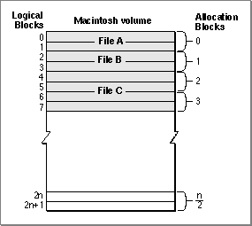
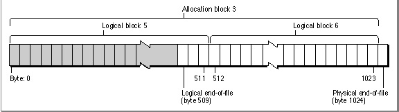

File Size
The size of a file is usually limited only by the size of its volume. A volume is a portion of a storage device that is formatted to contain files. A volume can be an entire disk or only a part of a disk. A 3.5-inch floppy disk, for instance, is always formatted as one volume. Other memory devices, such as hard disks and file servers, can contain multiple volumes.The size of a volume varies from one type of device to another. Volumes are formatted into chunks known as logical blocks, each of which can contain up to 512 bytes. A double-sided 3.5-inch floppy disk, for instance, usually has 1600 logical blocks, or 800 KB.
- Note
- Actually, a file on an HFS volume can be as large as 2 GB ($7FFFFFFF bytes). Most volumes are not large enough to hold a file of that size. An HFS volume currently can be as large as 2 GB.
Generally, however, the size of a logical block on a volume is of interest only to the disk device driver. This is because the File Manager always allocates space to a file in units called allocation blocks. An allocation block is a group of consecutive logical blocks. The File Manager can access a maximum of 65,535 allocation blocks on any volume. For small volumes, such as volumes on floppy disks, the File Manager uses an allocation block size of one logical block. To support volumes larger than about 32 MB, the File Manager needs to use an allocation block size that is at least two logical blocks. To support volumes larger than about 64 MB, the File Manager needs to use an allocation block that is at least three allocation blocks. In this way, by progressively increasing
the number of logical blocks in an allocation block, the File Manager can handle
larger and larger volumes. Figure 1-2 illustrates how logical blocks are grouped into allocation blocks.Figure 1-2 Logical blocks and allocation blocks

The size of the allocation blocks on a volume is determined when the volume is initialized and depends on the number of logical blocks it contains. In general, the
Disk Initialization Manager uses the smallest allocation block size that will allow the
File Manager to address the entire volume. A nonempty file fork always occupies at least one allocation block, no matter how many bytes of data that file fork contains. On a
40 MB volume, for example, a file's data fork occupies at least 1024 bytes (that is, two logical blocks), even if it contains only 11 bytes of actual data.To distinguish between the amount of space allocated to a file and the number of bytes of actual data in the file, two numbers are used to describe the size of a file. The physical end-of-file is the number of bytes currently allocated to the file; it's 1 greater than the number of the last byte in its last allocation block (since the first byte is byte number 0). As a result, the physical end-of-file is always an exact multiple of the allocation block size. The logical end-of-file is the number of those allocated bytes that currently contain data; it's 1 greater than the number of the last byte in the file that contains data. For example, on a volume having an allocation block size of two logical blocks (that is,
1024 bytes), a file with 509 bytes of data has a logical end-of-file of 509 and a physical end-of-file of 1024 (see Figure 1-3).Figure 1-3 Logical end-of-file and physical end-of-file

You can move the logical end-of-file to adjust the size of the file. When you move the logical end-of-file to a position more than one allocation block short of the current physical end-of-file, the File Manager automatically deletes the unneeded allocation block from the file. Similarly, you can increase the size of a file by moving the logical end-of-file past the physical end-of-file. When you move the logical end-of-file past the physical end-of-file, the File Manager automatically adds one or more allocation blocks to the file. The number of allocation blocks added to the file is determined by the volume's clump size. A clump is a group of contiguous allocation blocks. The purpose of enlarging files always by adding clumps is to reduce file fragmentation on a volume, thus improving the efficiency of read and write operations.If you plan to keep extending a file with multiple write operations and you know in advance approximately how large the file is likely to become, you should first call the
SetEOFfunction to set the file to that size (instead of having the File Manager adjust
the size each time you write past the end-of-file). Doing this reduces file fragmentation and improves I/O performance.